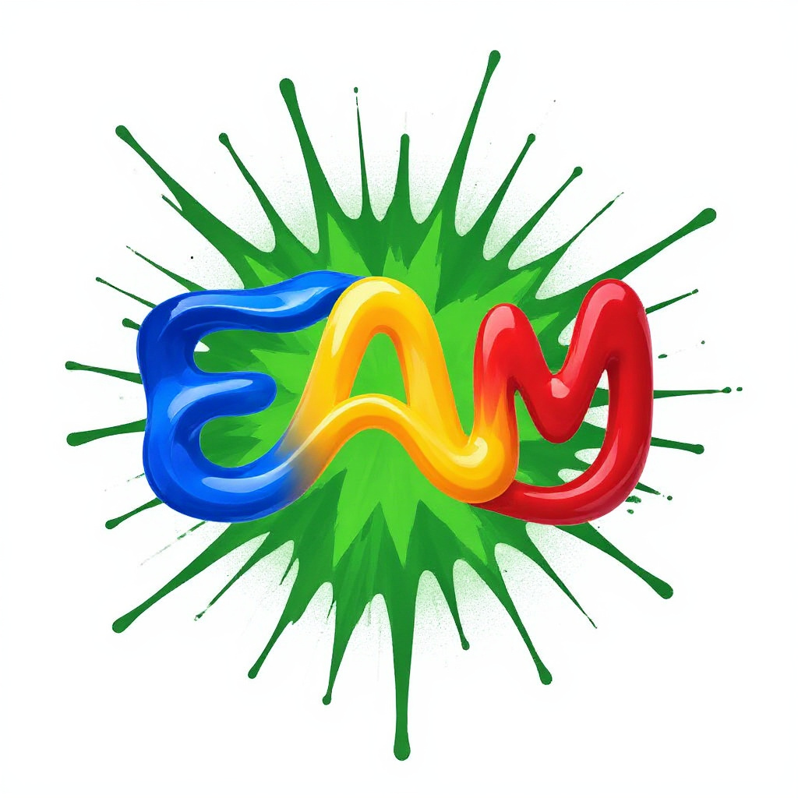
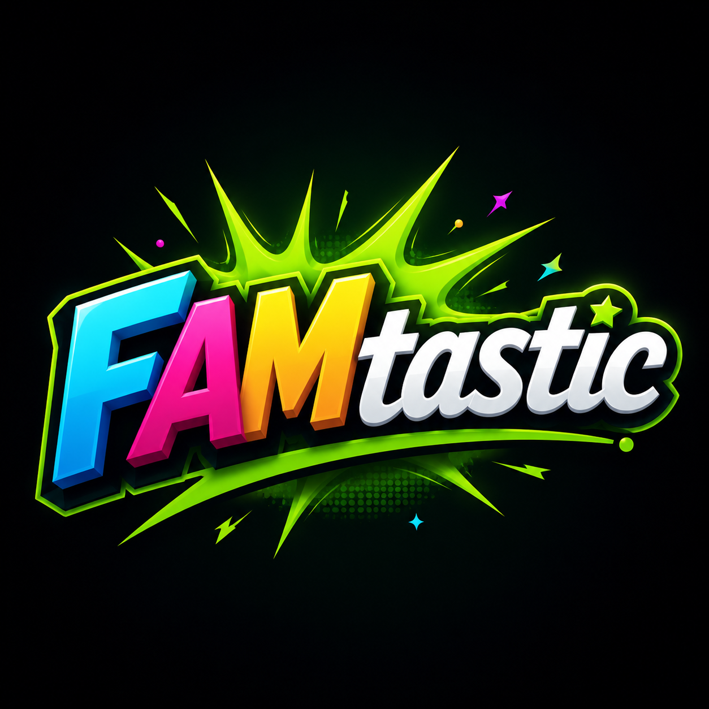
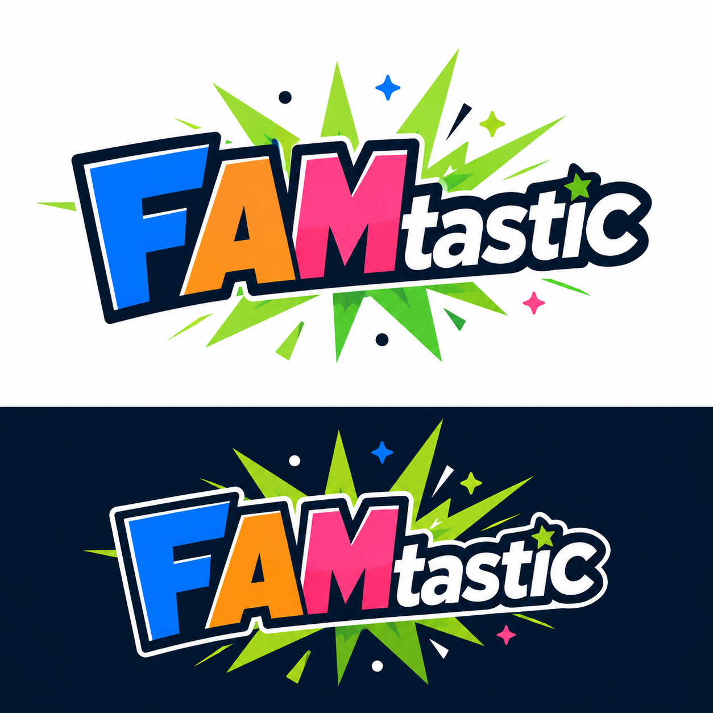
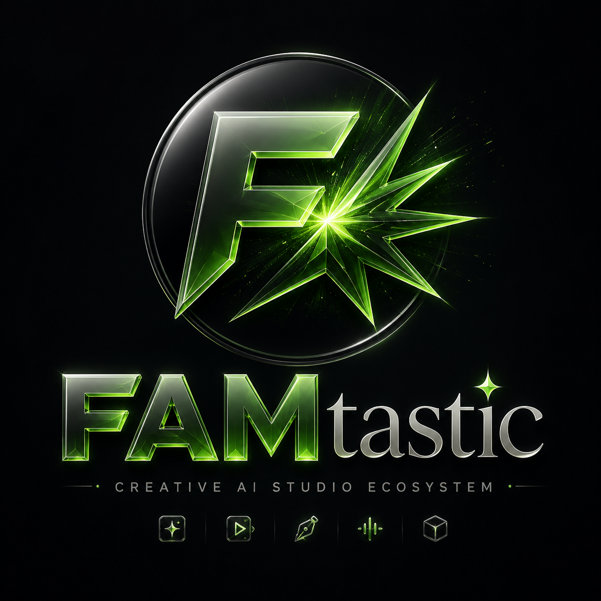
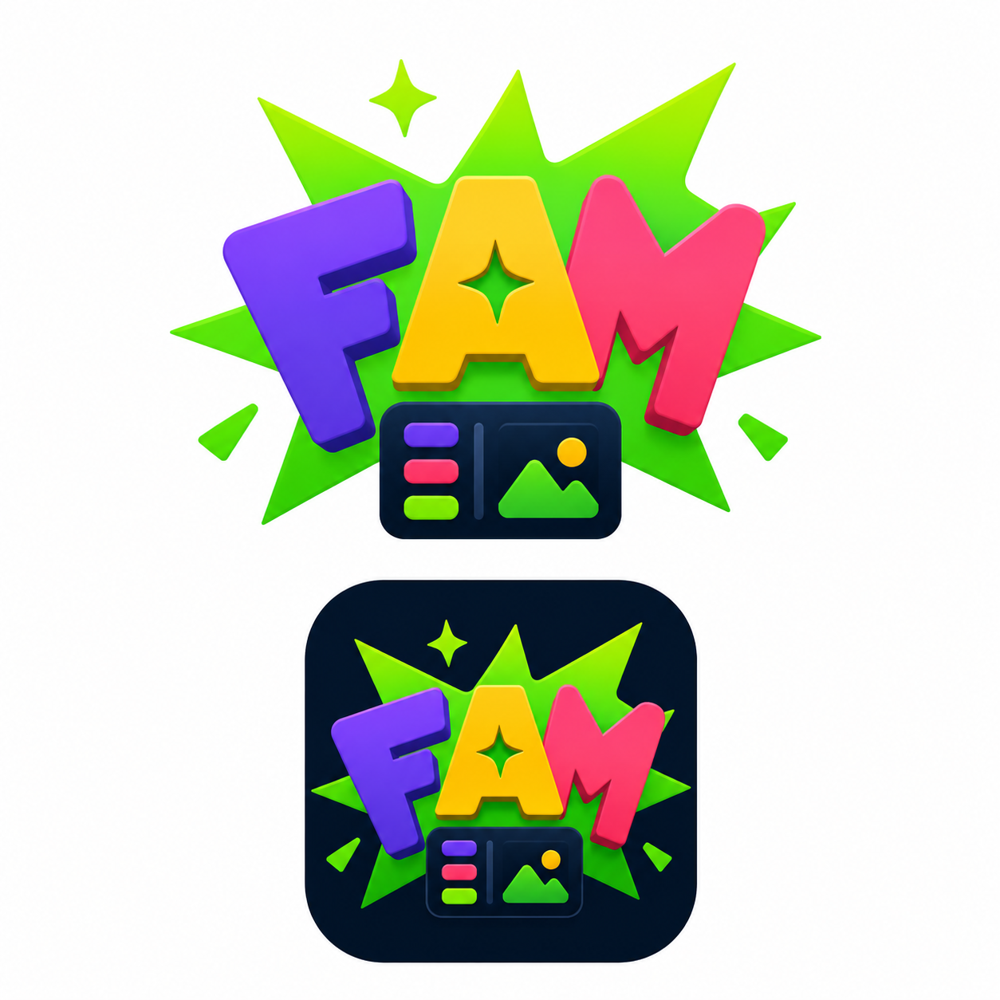

Strong FAM mark and green burst, but it dropped “tastic.” Useful only as FAM/icon energy reference.

Correct spelling, old-logo energy, green burst, strong FAM+tastic split. Best first concept direction.

Best production/vector path. Already shows light/dark usage. Good candidate for vectorization and brand kit.

Strong for app/splash/Mission Control vibe. More premium/cinematic, but needs simplified production lockup.

Good brand energy, but too detailed for favicon. Needs simpler F/A/star or burst mark.